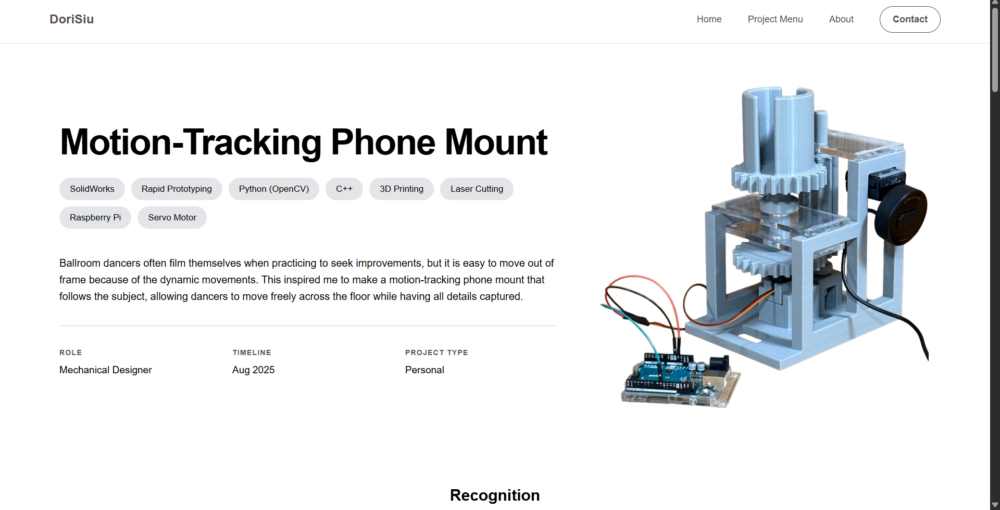

Portfolio Website
I designed and developed this interactive portfolio from scratch, applying core UI/UX principles to ensure a seamless user journey. To move beyond intuition, I am currently conducting a User Experience (UX) survey to gather data-driven insights for iterative site improvements.

UI Design Principles
F-Pattern & "Split-Screen" Hero: Designed to align with natural scanning behaviors, placing high-priority text on the left and supporting visuals on the right; Implemented a mobile-first approach where the layout stacks vertically on smaller viewports, ensuring the image follows the text for a logical content flow.

Image the motion-tracking phone mount's detailed project page to demostrate design principles
Information Scannability: Leveraged tables and "tag clouds" to compartmentalize technical skills and project metrics. This allows recruiters, engineers, and other target audiences to quickly scan for key qualifications without navigating dense blocks of text.
Navigation & Accessibility: Maintained a persistent navbar across all pages to provide a "home base" for the user.
Mobile Navigation: Integrated a responsive hamburger menu to preserve screen real estate on mobile devices while maintaining full site access.
Accessible Design: Utilized descriptive alt text for all imagery to ensure the portfolio is fully navigable for screen-reader users and provides context if media fails to load.
Negative Space Implementation: Strategically utilized "breathing room" around text and assets to reduce cognitive load and improve focus on key project details.
High-Contrast Typography: Applied a high-contrast color palette to ensure maximum legibility
UX Research & Iteration
Goal: To optimize the site for clarity, consistency, and user agency (the ability for users to control their experience).
Methodology: Conducting a qualitative usability study where participants review the live site and provide feedback via a structured Google Form and/or semi-structured interviews. This data-driven approach identifies friction points and informs future design iterations.